- 3~5명의 모둠으로
구성해요. - 모둠원과 협력하여
프로젝트를 진행해요.
프로젝트 활동
Ⅴ 프로젝트
프로젝트 활동 안내
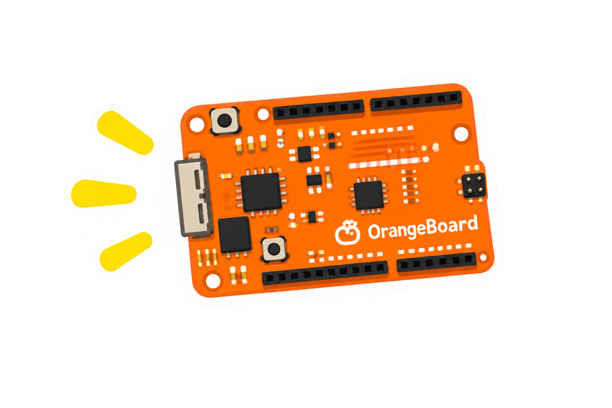
피지컬 컴퓨팅 프로젝트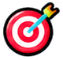
학습 목표피지컬 컴퓨팅 시스템을 기획·제작하고, 협력하여 문제를 해결하는 경험을 한다.
프로젝트 활동 과정
- 1
모둠 구성
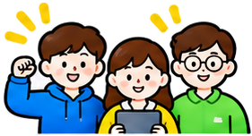
역할을 정하고
프로젝트를
함께 할 모둠을
구성해요. - 2
문제 발견
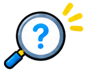
일상생활에서
개선하고 싶은
문제를 찾아요. - 3
주제 선정
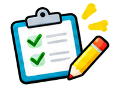
해결할 문제를 정하고
프로젝트 주제를
선정해요. - 4
작품 기획
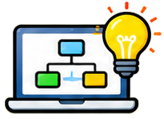
작품의 기능, 필요한
센서와 모터, 동작 과정을
계획해요. - 5
제작
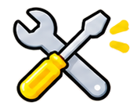
회로를 구성하고
코드를 작성하여
작품을 제작해요. - 6
평가 및 공유
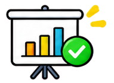
작품을 실행하고
결과를 평가한 후
모둠의 작품을 공유해요.
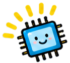
우리는 피지컬 컴퓨팅 시스템을 기획하고 구현하는 개발자입니다!
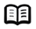
교과서 125~127쪽Ⅴ 프로젝트
모둠 구성과 역할
피지컬 컴퓨팅 프로젝트
학습 목표
프로젝트를 함께 수행할 모둠을 구성하고, 각 역할의 맡은 일을 이해한다.
모둠 구성
모둠 구성 예시
3인 모둠
프로듀서,
프로그래머,
디자이너프로듀서가
엔지니어 겸임
4인 모둠
프로듀서,
엔지니어,
프로그래머,
디자이너
5인 모둠
프로듀서,
엔지니어,
프로그래머,
디자이너네 역할 중 하나에 2명
모둠의 역할
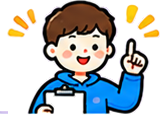
프로듀서
- 프로젝트의 전체 방향을 계획하고 조정해요.
- 일정을 관리하고, 모둠원 활동을 이끌어요.
엔지니어
- 센서, 모터 등 하드웨어를 연결하고 확인해요.
- 작품이 잘 동작하도록 하드웨어를 관리해요.
프로그래머
- 작품이 동작하도록 코드를 작성하고 수정해요.
- 오류를 확인하고, 프로그램을 개선해요.
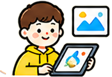
디자이너
- 작품의 외형과 화면, 발표 자료를 디자인해요.
- 사용하기 편하고 보기 좋은 작품을 구성해요.
각자의 역할을 실천하며, 협력하여 멋진 프로젝트를 완성해 봅시다!
Ⅴ 프로젝트
모두가 함께 지켜야 할 공동사항
피지컬 컴퓨팅 프로젝트
학습 목표
각자의 역할을 주도적으로 수행하고, 다른 팀원을 돕고 함께 협력하는 것이 중요합니다.
모두가 주도적으로 참여하는 우리 팀 프로젝트!
존중 · 경청 · 협력
서로 존중하고 경청하며 협력한다.
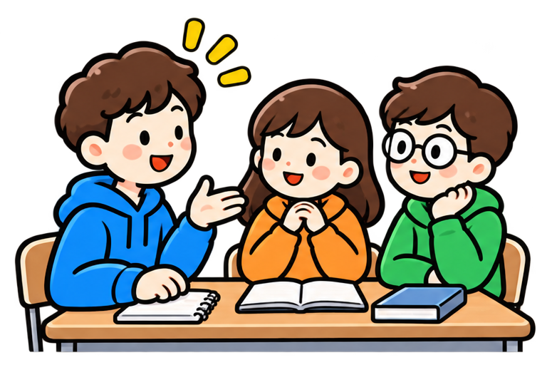
- 서로의 의견을 존중하고 끝까지 경청한다.
- 의견이 다를 때는 함께 해결 방법을 찾는다.
이해 · 도움
다른 팀원의 역할을 이해하고 적극적으로 도와준다.
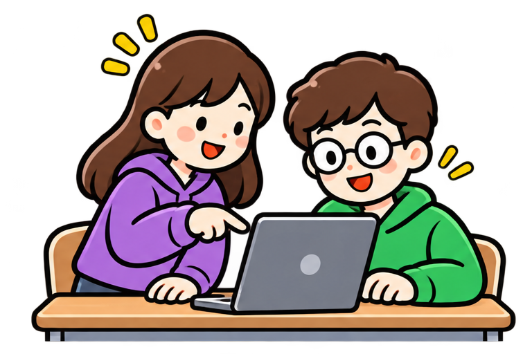
- 자세히 알지 못해도 관심을 가지고 배우려는 태도를 가진다.
- 어려움이 있을 때 서로 도와 프로젝트를 완성한다.
정리 · 청결
작업 중, 작업 후 항상 주변을 정리하고 청결을 유지한다.
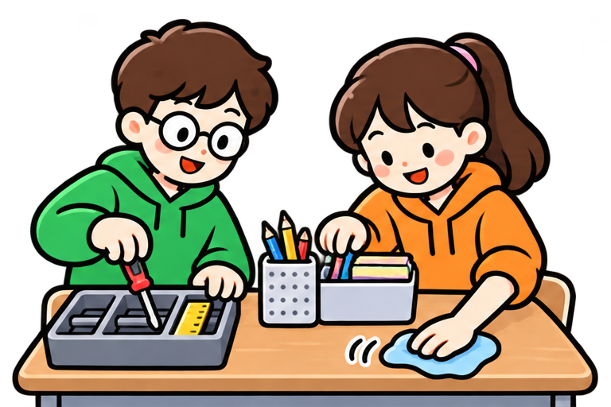
- 사용한 도구와 재료는 제자리에 정리한다.
- 깨끗하고 안전한 환경을 함께 만든다.
함께 문제 해결
문제가 생기면 함께 고민하고 해결책을 찾는다.
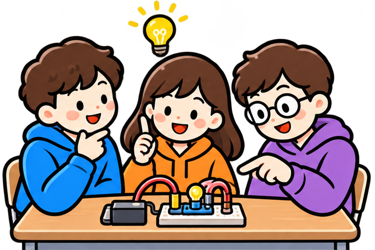
- 문제가 생기면 책임을 미루지 않고 함께 원인을 찾는다.
- 다양한 방법을 시도하며 해결 방안을 찾아간다.
우리의 목표는 함께 만들어가는 완성도 높은 작품과 성장의 경험입니다!
Ⅴ 프로젝트
프로젝트 주제 정하기
피지컬 컴퓨팅 프로젝트
학습 목표
실생활의 문제를 살펴보고, 피지컬 컴퓨팅으로 해결할 수 있는 프로젝트 주제를 정한다.
주제 정하기 과정
- 1
문제 발견
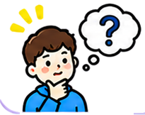
일상생활에서
불편하거나
개선하고 싶은
문제를 찾아요. - 2
아이디어 탐색
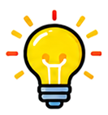
문제를 해결할
수 있는 다양한
아이디어를
떠올려요. - 3
해결 방법 구상
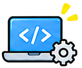
피지컬 컴퓨팅으로
구현할 수 있는
해결 방법을
생각해요. - 4
주제 결정
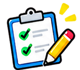
모둠에서
실현 가능하고
의미 있는
주제를 정해요.
좋은 프로젝트 주제의 조건
- 실생활의 문제를 해결할 수 있어요.
- 피지컬 컴퓨팅으로 구현할 수 있어요.
- 적절한 난이도로 제작할 수 있어요.
- 사용자에게 도움이 되는 가치를 가져요.
주제 예시
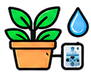
화분 자동
물주기 시스템
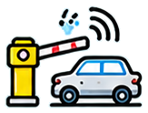
주차 공간
알림 시스템
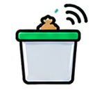
스마트
쓰레기통
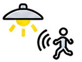
움직임 감지
자동 조명
우리 모둠이 해결하고 싶은 문제는 무엇인지 생각해 보고, 프로젝트 주제를 정해 봅시다!
교과서 128~131쪽
Ⅴ 프로젝트
프로젝트 주제 예시
피지컬 컴퓨팅 프로젝트
학습 목표
피지컬 컴퓨팅으로 해결할 수 있는 다양한 프로젝트의 주제를 살펴보고, 아이디어를 얻는다.
프로젝트 주제 예시
위 예시를 참고하여 우리 모둠의 창의적인 프로젝트 주제를 생각해 봅시다!
교과서 128~131쪽
Ⅴ 프로젝트
작품 기획
피지컬 컴퓨팅 프로젝트
학습 목표
작품을 만들기 전에 모둠이 함께 결정할 내용을 정리합니다.
작품 기획
1
작품명
우리 작품의 이름은 무엇인가요?
2
제작 배경
어떤 불편이나 문제를 해결하려고 하나요?
3
작품 개요
작품은 어떤 일을 하고, 어떻게 작동하나요?
4
사용 부품
작품을 만드는 데 어떤 부품이 필요한가요?
5
입력 장치
어떤 정보를 입력받아야 하나요?
6
출력 장치
어떤 동작이나 결과를 보여 주나요?
7
디자인 구상
작품의 외형과 센서·출력장치 배치 등을 구상해요.
작품 크기: 가로·세로·높이 각각 20cm 이하Ⅴ 프로젝트
작품 제작과 평가
피지컬 컴퓨팅 프로젝트
학습 목표
역할별 제작 과정을 기록하고, 작품을 평가하며 결과를 공유합니다.
역할별 제작 과정 기록
제작 결과 확인
기획한 작품이 의도한 대로 작동하는지 함께 확인합니다.
작품 자기평가
각 항목을 상·중·하로 돌아보고 개선할 점을 이야기합니다.
작품 공유와 상호평가
혁신적인 아이디어 · 실생활 활용도 · 작품 완성도를 살펴보고, 인상 깊었던 작품과 감상·개선할 점을 나눕니다.
제작 기록, 자기평가, 작품 공유
Ⅴ 프로젝트
자동 조편성
피지컬 컴퓨팅 프로젝트
학습 목표
희망 역할별 학생 명단을 입력하고, 조편성 결과를 확인합니다.
명단·결과는 서버로 전송하지 않고 현재 탭의 세션에만 보관합니다. 다시 실행하면 선택한 학급의 결과를 새로 배정합니다.
교과서 125쪽
Ⅴ 프로젝트
모둠별 프로젝트 현황
피지컬 컴퓨팅 프로젝트
학습 목표
학급별 모둠 정보와 프로젝트 자료를 확인합니다.
모둠별 프로젝트 현황
| 모둠 | 프로젝트 주제 |
|---|
등록된 모둠 정보만 표시합니다. Google 슬라이드가 연결된 모둠에만 바로가기가 표시됩니다.
교과서 125~127쪽